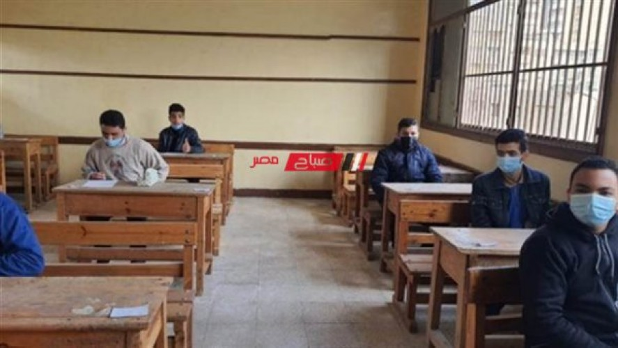

الجزء المحذوف من منهج تانية اعدادي الترم الثاني 2023 في كل المواد وزارة التربية والتعليم
نوضح اليكم في هذا المحور عن الأجزاء المحذوفة والملغية من منهج الصف الثاني الاعدادي الفصل الدراسي الثاني 2023 في جميع المواد مادة اللغة العربية واللغة الإنجليزية والرياضيات ومادة الدراسات الاجتماعيه ومادة العلوم، ونستوفي اليكم كافة التفاصيل بشأن الأجزاء المحذوفة من خلال هذا التقرير.
امتحانات الصف الثاني الاعدادي الفصل الدراسي الثاني 2023
وعلى أن تجري امتحانات الصف الثاني الاعدادي الفصل الدراسي الثاني لهذا الترم اخر السنة 2023 في شهر مايو بحسب خطة الوزارة التي تسير عليها منذ بداية هذا العام الجاري 2023 وايضا تنطلق امتحانات جميع صفوف النقل في شهر مايو، وتعقد امتحانات الثانوية العامة لهذا العام الحالى في شهر يونيو 2023،
الجزء المحذوف من منهج تانية اعدادي الترم الثاني 2023
ويتيح اليكم موقعنا في قسم اخبار التعليم التعرف على الأجزاء المحذوفة والملغية من جميع المناهج المقررة على طلاب الصف الثاني الاعدادي الفصل الدراسي الثاني 2023 كما يلي.
الملغي من منهج اللغة العربية درس اختراعات عربية من صفحة 14 إلى 20 _ حياة للحياة نثر من صفحة 42 إلى صفحة رقم 44
والمحذوف من اللغة الإنجليزية
Review c
From p. 32 to p.33
Unit 12
From p.54 to p.63
Review D
From p. 64 to p.65
والملغية من منهج مادة العلوم: الوحدة الثانية: الدرس الأول نشاط رقم 1، بيان مفهوم درجة الصوت فقط صفحة 27 والدرس الثاني الجزء الخاص بتطبيق حياتي صفحة 36،37،38، الدرس الثالث من أول ظواهر طبيعية مرتبطة بانعكاس وانكسار الضوء.
الوحدة الثالثة: الدرس الثاني: صفحة 64/65 أمراض الجهاز التناسلي كلها إلى نهاية التطبيق الحياتي.
المحذوف من منهج مادة الدراسات الاجتماعية: الوحدة الأولى: خيرات وطننا العربي الدرس الثالث الثروة الحيوانية والسمكية في وطننا العربي.
الوحدة الرابعة : روائع الحضارة الإسلامية الدرس الثالث روائع الحضارة الإسلامية في العلوم والآداب.
الوحدة الخامسة: قيمنا الإسلامية والمصالحة، الدرس الثاني المشاركة التطوعية.
محذوفات الصف الثاني الاعدادي